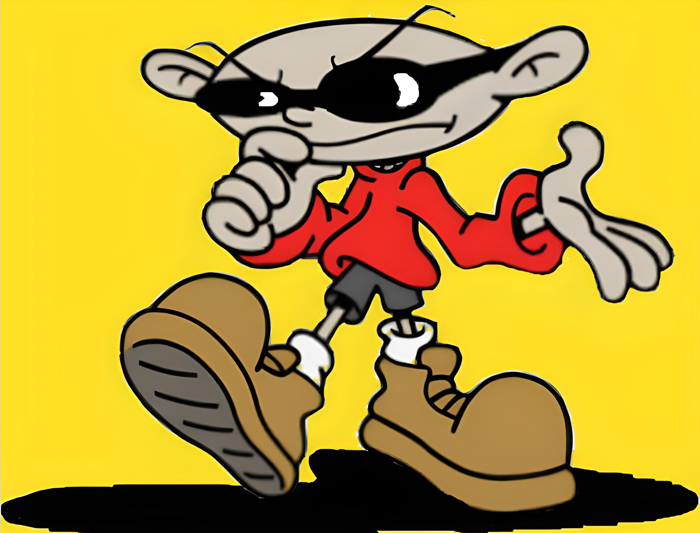
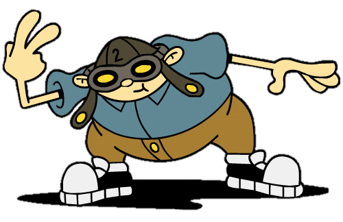
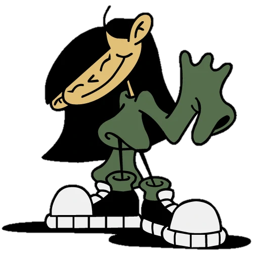
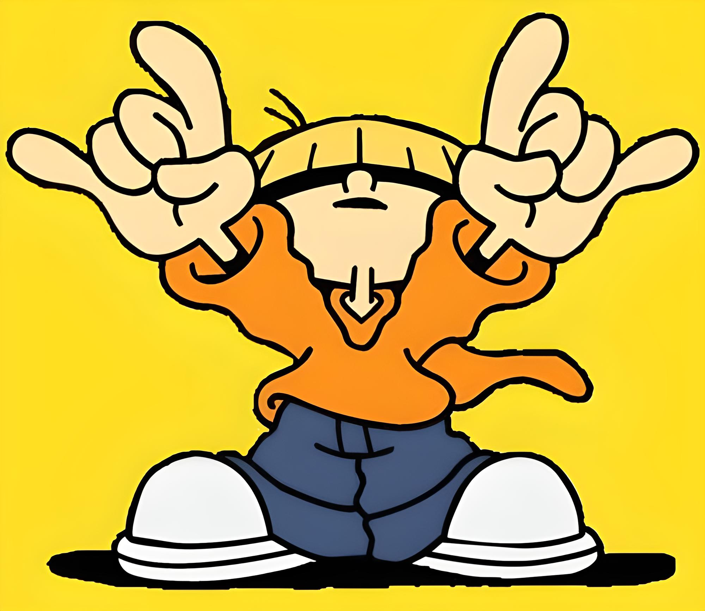
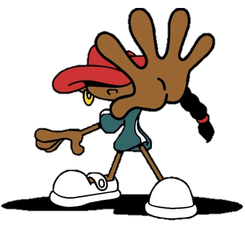

"Kids Next Door" es una pasteleria que se encuentra llena de distintos pasteles todos adecuados, podemos hacer un pastel personalizado y de las dimensiones que usted quiera, al igual tenemos un amplio catálogo de pasteles ya realizados que se pueden usar en bodas, XV años, o en algun evento que a usted se le presente.
    